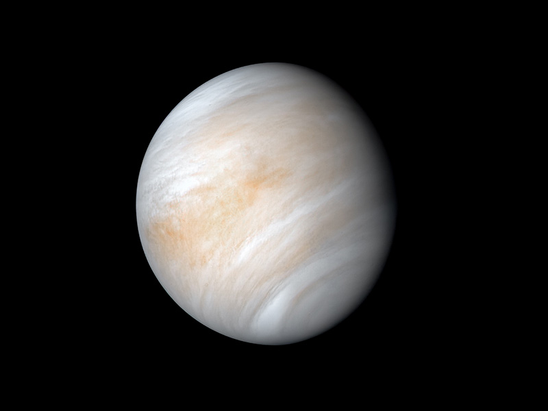

Vénusz
Áttekintés
A Vénusz a Naptól számított második bolygó, és a Föld legközelebbi bolygószomszédja. Ez egyike a négy belső, földi (vagy sziklás) bolygónak, és gyakran nevezik a Föld ikerbolygójának, mert hasonló a mérete és a sűrűsége. Ezek azonban nem egypetéjű ikrek – gyökeres különbségek vannak a két világ között.
A Vénusz vastag, mérgező atmoszférája szén-dioxiddal van teli, és állandóan vastag, sárgás kénsavfelhőkbe burkolják, amelyek megfogják a hőt, és elszabadult üvegházhatást okoznak. Naprendszerünk legforróbb bolygója, bár a Merkúr közelebb van a Naphoz. A Vénusz felszíni hőmérséklete körülbelül 900 Fahrenheit-fok (475 Celsius-fok) – elég meleg ahhoz, hogy megolvadjon az ólom. A felület rozsdás színű, és intenzíven ropogós hegyek és több ezer nagy vulkán borítja. A tudósok elképzelhetőnek tartják, hogy egyes vulkánok még mindig aktívak.
A Vénusz felszínén zúzós légnyomás uralkodik – a Földének több mint 90-szerese –, amely hasonló ahhoz a nyomáshoz, amely egy mérfölddel az óceán alatt a Földön tapasztalható.
Amit érdemes tudni...
- A Vénuszt gyakran "Föld ikerpárjának" nevezik, mert méretük és szerkezetük hasonló, de a Vénusz rendkívüli felületi hővel és sűrű, mérgező légkörrel rendelkezik. Ha a Nap olyan magas lenne, mint egy tipikus bejárati ajtó, akkor a Föld és a Vénusz körülbelül egy nikkel nagyságú lenne.
- A Vénusz a második legközelebbi bolygó a Naphoz, mintegy 67 millió mérföldnyire (108 millió kilométer) kering.
- A Vénusz nagyon lassan forog a tengelye körül – egy nap a Vénuszon 243 földi napig tart. A bolygó azonban gyorsabban kering a Nap körül, mint a Föld, így egy év a Vénuszon csak körülbelül 225 földi napot vesz igénybe, így egy vénuszi nap hosszabb, mint az éve!
- A Vénusz szilárd felszíne kupolaszerű vulkánokkal, hasadékokkal és hegyekkel borított, kiterjedt vulkáni síkságokkal és hatalmas, gerinces fennsíkokkal.
- A Vénusz átlagos felszíne kevesebb mint egymilliárd éves, és valószínűleg 150 millió éves is lehet – ami geológiai szempontból viszonylag fiatal. Ez egy nagy rejtély a tudósok számára – nem tudják pontosan, mi történt, ami miatt a Vénusz teljesen újjáéledt.
- A Vénusz vastag atmoszférája megfogja a hőt, és elszabadult üvegházhatást okoz – így Naprendszerünk legforróbb bolygója, amelynek felszíni hőmérséklete elég meleg ahhoz, hogy az ólom megolvadjon. Az üvegházhatás miatt a Vénusz nagyjából 390 °C-kal melegebb, mint az üvegházhatás nélkül.
- A Vénuszt állandóan vastag, mérgező kénsav felhők borítják, amelyek 45-70 kilométeres magasságban indulnak. A felhők rohadt tojásszagúak!
- A Vénusz volt az első bolygó, amelyet űrhajó fedezett fel, és az űrkutatás történetének korai szakaszában intenzíven tanulmányozták. A Vénusz volt az első bolygó, amelynek felszínét a Földről űrszonda érte el. Az erős hőség azt jelenti, hogy a leszállók csak néhány órát éltek túl.
- A Vénusz az általunk ismert életnek valószínűtlen helye, de egyes tudósok azt feltételezik, hogy a mikrobák magasan a felhők között is előfordulhatnak, ahol hűvösebb és a nyomás hasonló a Föld felszínéhez. A foszfint, a mikrobiális élet lehetséges indikátorát figyelték meg a felhőkben.
- A Vénusz visszafelé forog a tengelye körül a Naprendszerünk legtöbb bolygójához képest. Ez azt jelenti, hogy a Nap nyugaton kel fel és keleten nyugszik, ellentétben azzal, amit a Földön látunk.
Pár fun fact
| Tény | Vénusz | Föld |
|---|---|---|
| Távolsága a naptól (AU) | 0.72 | 1.00 |
| Orbitális periódus (nap) | 225 | 365.25 |
| Átmérő (km) | 12,104 | 12,742 |
| Átlagos felszíni hőmérséklet (°C) | 462 | 14 |
| Holdjainak száma | 0 | 1 |
| Légkör | Atmoszféra ami főleg szén-dioxidból áll | Atmoszféra ami főleg nitrogénból és oxigénből áll |
| Mágneses mező | Gyenge, részben kiterjedt | Erős és rendkívül kiterjedt |